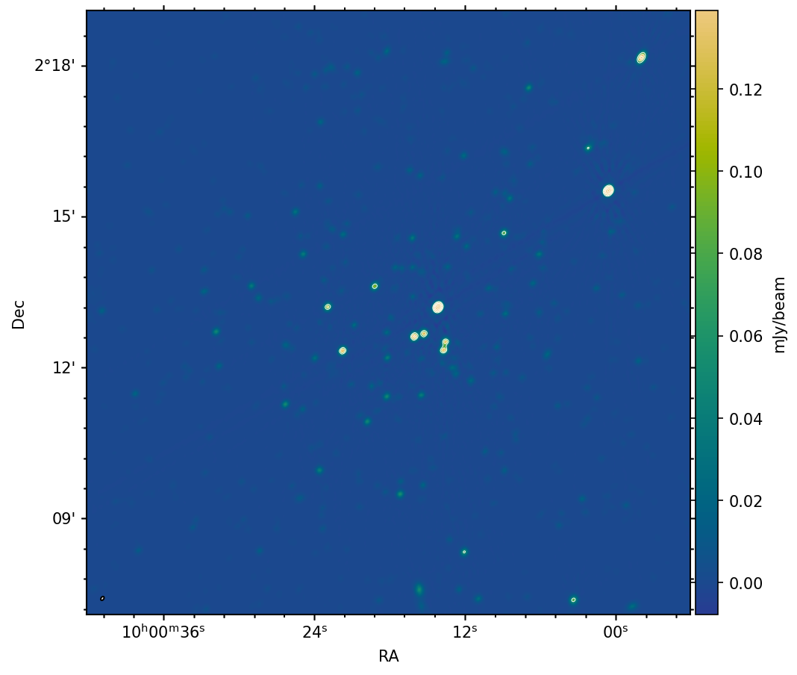
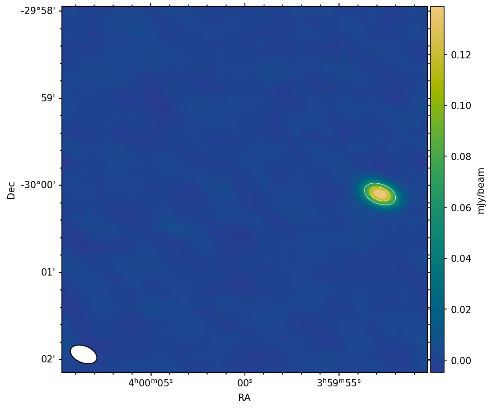

Comparative simulations
Each case reproduces a well-known deep-field or survey configuration with matched sky inputs and imaging parameters, making it straightforward to compare sensitivity, angular resolution, and uv-coverage across facilities.

Case #1 — MIGHTEE deep field
A 1.28 GHz continuum field observed with MeerKAT L-band, SKA1-MID Band 1/2, and the VLA in B and D configurations. All runs share the MIGHTEE DR1 sky model and a matched 0.2° field of view.
Read the case →
Case #2 — Polarization in the confusion limit
A 200–400 MHz SKA-LOW-AAstar snapshot with 350 sources in 0.07°. One source is set to Stokes V = 1 mJy, showing how circular polarization can lift a faint target out of a confusion-limited Stokes I field.
Read the case →
Case #3 — SKAO Staged Delivery
Exploring the chronological staged delivery of the SKA telescopes, from the initial AA0.5 verification array to the full AA4 design baseline. Each assembly is simulated on a 0.6° portion of the SKA Data Challenge 1 catalogue with sources down to 10 μJy.
Read the case →
Case #4 — Redshifted radio galaxies
Arp 220 placed at z = 0.018, 0.15, 0.30, 0.50, 1.00 and 2.00, observed with SKA-MID-AA* at 1.35 and ~6.5 GHz. Cosmological dimming, angular-size scaling and SFR evolution applied to the same resolved radio galaxy model.
Read the case →